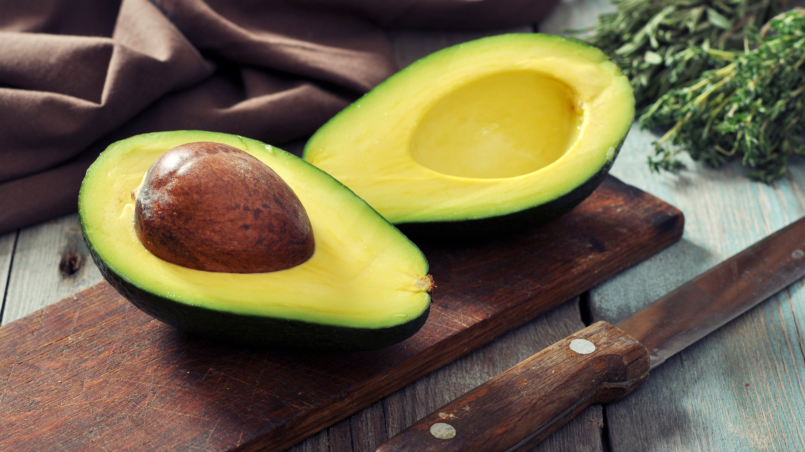
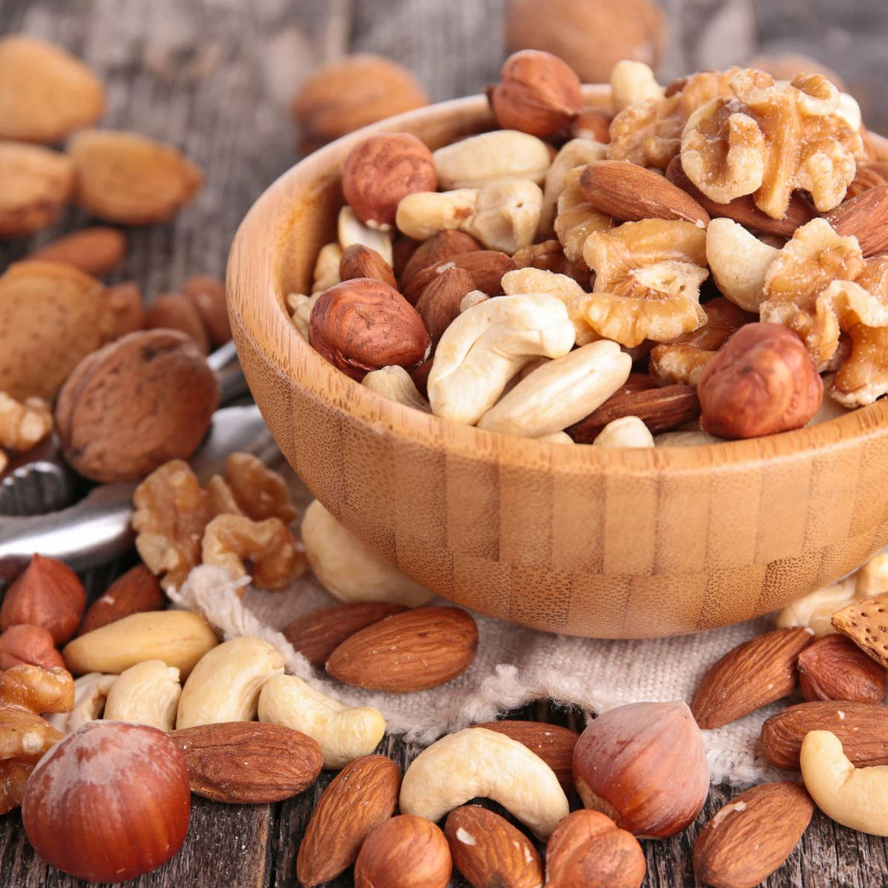
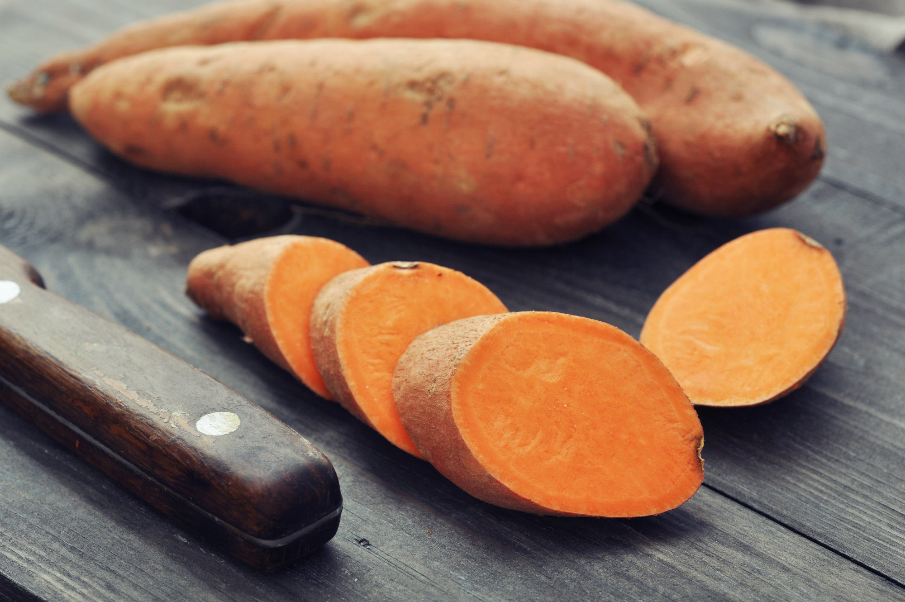
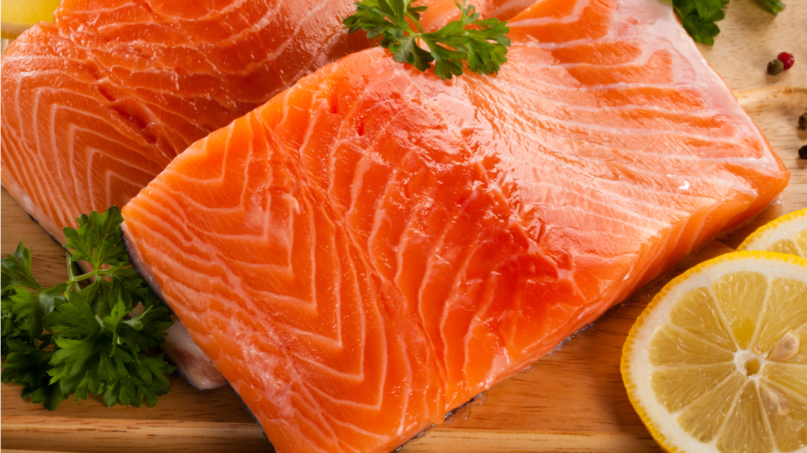
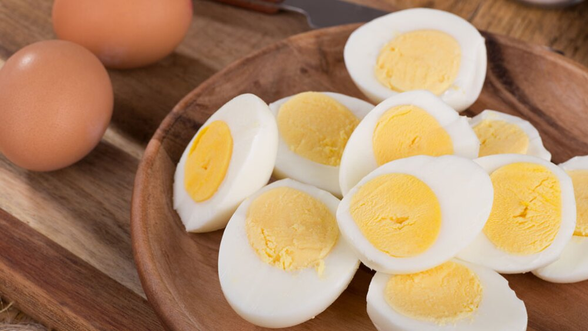
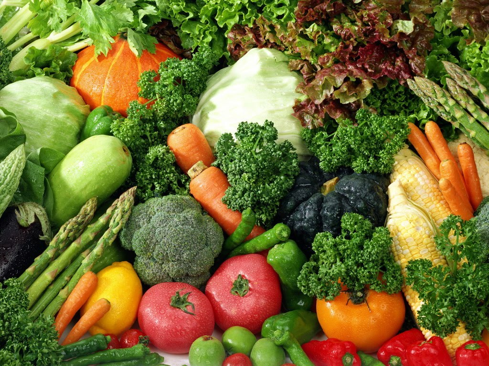
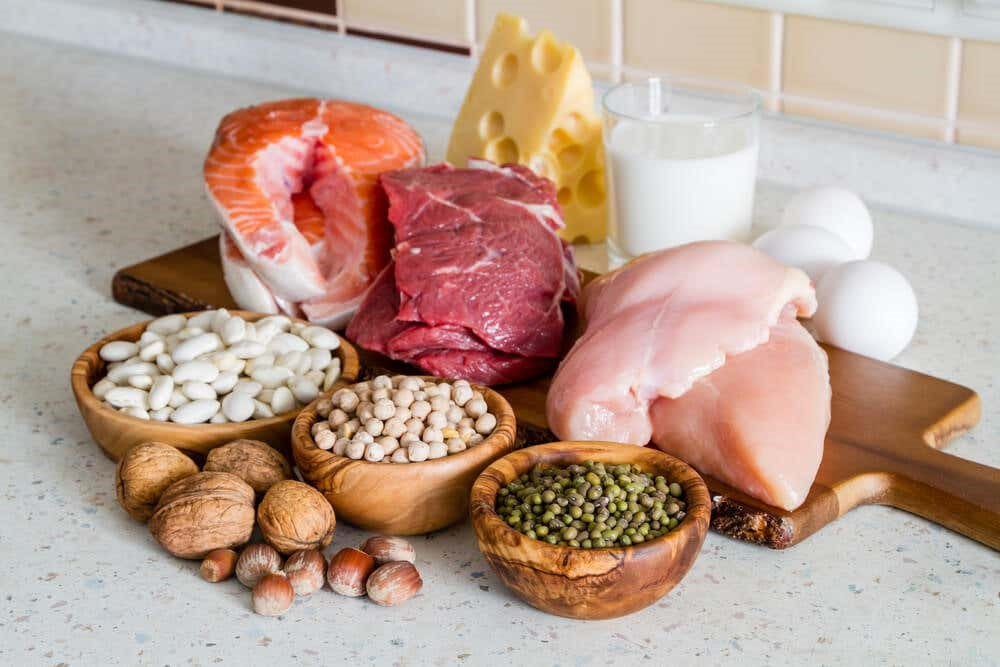
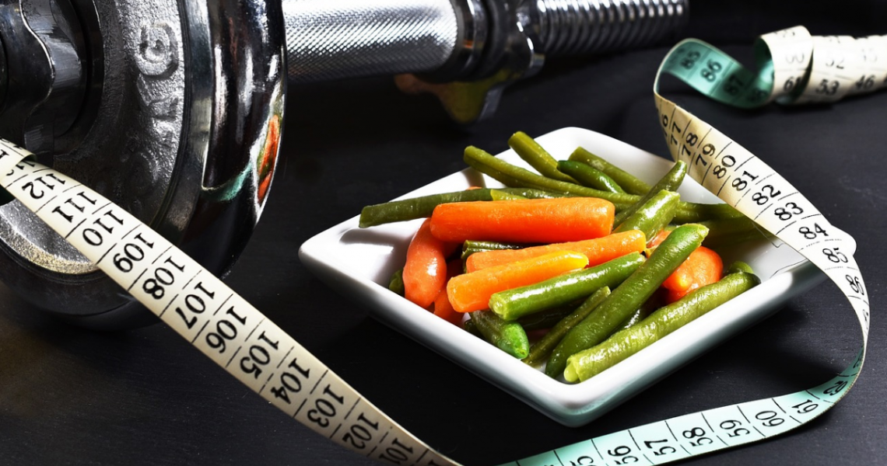

La alimentación juega un papel muy importante para lograr alcanzar nuestro objetivo de ganar masa muscular y perder grasa corporal. Los alimentos aportan nutrientes valiosos para el cuerpo, por eso lo idel es conocer y saber cuales son los ideales para consumir durante la etapa en la que nos encontremos, si volumen o definición.
| Productos que deben consumir en etapa de volumen | ||
|  |  |  |
| Aguacate | Frutos secos | Camote |
|  |  | |
| Pollo y arroz | Salmón | Huevo cocido |
| Productos que deben consumir en etapa de definición | ||
|  |  | |
| Frutas | Verduras frescas | Proteinas |
Podemos definir déficit calórico como la falta de calorías. Es una herramienta realmente interesante para las personas que quieren perder peso sin hacer sufrir al cuerpo. Eso significa que se necesita hacer ejercicio para quemar más calorías de las que se ingieren.
La fase de volumen en el gimnasio significa precisamente esto. Un intervalo de tiempo en el que nuestros objetivos irán encaminados a ganar musculo.
Una fase de volumen se consigue fundamentalmente a través de una dieta hipercalórica. Es decir, una pauta nutricional que de forma saludable te ayude a subir de peso. Una fase de superávit calórico en la que aportaremos más calorías al cuerpo de las que realmente “gastamos”.
Si en una fase de volumen buscamos ganar músculo, en una fase de definición no buscamos perderlo. Lo que buscamos en definición es “resaltar” lo máximo posible la musculatura de nuestro cuerpo.
Una fase de definición se consigue a través de una dieta hipocalórica en la que restringimos la ingesta de alimentos para generar un déficit y por consiguiente una pérdida de peso.